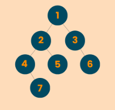

Algorithm - Tree in JS
Balanced Binary Tree
Purpose: To determine balanced binary tree or not for the given binary tree
Find out if the given binary tree is a balanced binary tree or not.
Given a binary tree, determine if it is height-balanced or not.